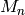
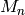

SofQWMoments dialog.
Table of Contents
| Name | Direction | Type | Default | Description |
|---|---|---|---|---|
| Sample | Input | MatrixWorkspace | Mandatory | Sample to use. |
| EnergyMin | Input | number | -0.5 | Minimum energy for fit. Default=-0.5 |
| EnergyMax | Input | number | 0.5 | Maximum energy for fit. Default=0.5 |
| Scale | Input | number | 1 | Scale factor to multiply y(Q,w). Default=1.0 |
| Verbose | Input | boolean | False | Switch Verbose Off/On |
| Plot | Input | boolean | False | Switch Plot Off/On |
| Save | Input | boolean | False | Switch Save result to nxs file Off/On |
| OutputWorkspace | Output | WorkspaceGroup | Mandatory | group_workspace workspace that includes all calculated moments. |
Calculates the  moment  of
moment  of  where
is the integral of
where
is the integral of  over all w for
over all w for
 to 4.
to 4.
Example - Running SofQWMoments from with an SofQW workspace.
#create a dummy workspace
function = "name=Lorentzian,Amplitude=1,PeakCentre=5,FWHM=1"
ws = CreateSampleWorkspace("Histogram", Function="User Defined", UserDefinedFunction=function, XMin=0, XMax=10, BinWidth=0.01, XUnit="DeltaE")
ws = ScaleX(ws, -5, "Add") #shift to center on 0
ws = ScaleX(ws, 0.1) #scale to size
ws = RenameWorkspace(ws, OutputWorkspace="irs21760_graphite002_red")
LoadInstrument(ws, InstrumentName='IRIS')
#Run SofQW and then SofQWMoments
ws = SofQW(ws, '0.4, 0.1, 1.8', EMode='Indirect', EFixed='1.845', OutputWorkspace="irs00001_graphite002_red")
SofQWMoments(ws, OutputWorkspace='Test')
Categories: Algorithms | Workflow | MIDAS | PythonAlgorithms
{kind=link}